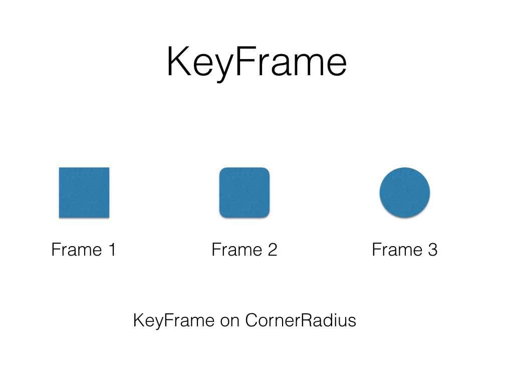

关键帧动画的实现方式有两种，一种是 UIView 动画，一种是 Core Animation 的 CAKeyFrameAnimation。两种方式的实现方式都很简单，先声明动画的总时间，再定义每个关键帧的属性变化和开始位置以及播放时间。

首先定义一个 UIImageView 把图片加载进来，更改一下合适的显示方式
var imageView = UIImageView(frame: CGRectZero)
func keyFrame() {
imageView.image = UIImage(named: "leaf")
imageView.clipsToBounds = true
// clipsToBounds 使得图片显示不超过 imageView 的 bounds
imageView.contentMode = UIViewContentMode.ScaleAspectFill
// ScaleAspectFill 避免图片在缩放的时候变形
}
然后就是定义我们的关键帧操作，需要注意的是，addKeyframeWithRelativeStartTime 的第一个参数是进度不是时间。
func startKeyFrameAnimation() {
// 定义一个总时间为 2 秒的动画
UIView.animateKeyframesWithDuration(2, delay: 0,
options: .CalculationModeCubic, animations: {
// 在动画进度为 0 的时候开始，耗时 0.5 秒
UIView.addKeyframeWithRelativeStartTime(0.0,
relativeDuration: 0.5) {
self.imageView.frame = CGRect(x: 0, y: 48,
width: self.view.frame.width, height: 0)
}
// 在动画进度为 0.25 的时候开始，耗时 0.5 秒
UIView.addKeyframeWithRelativeStartTime(0.25, relativeDuration: 0.5) {
self.imageView.frame = CGRect(x: 0, y: 32,
width: self.view.frame.width,
height: 260 + self.view.frame.height/4.0)
}
// 在动画进度为 0.5 的时候开始，耗时 0.5 秒
UIView.addKeyframeWithRelativeStartTime(0.5,
relativeDuration: 0.5) {
self.imageView.frame = CGRect(x: 0, y: 16,
width: self.view.frame.width,
height: 260 + self.view.frame.height/2.0)
}
// 在动画进度为 0.75 的时候开始，耗时 0.5 秒
UIView.addKeyframeWithRelativeStartTime(0.75, relativeDuration: 0.5) {
self.imageView.frame = CGRect(x: 0, y: 0,
width: self.view.frame.width,
height: self.view.frame.height)
}
}, completion: nil)
}
UIView 动画能操作的参数很少，利用 Core Animation 我们可以操作更多 Layer 的参数，实现更为有趣的动画。
这次我们需要额外定义一个 maskView 来作为 imageView 的 Mask。
func maskAnimation() {
imageView.image = UIImage(named: "leaf")
imageView.clipsToBounds = true
imageView.contentMode = .ScaleAspectFill
view.window!.addSubview(imageView)
imageView.frame = CGRect(x: 0, y: 0,
width: view.frame.width,
height: view.frame.size.height)
maskView.frame = CGRect(x: 0, y: 64,
width: 30, height: 30)
maskView.layer.cornerRadius = 15.0
maskView.layer.masksToBounds = true
maskView.backgroundColor = UIColor.blackColor()
imageView.layer.mask = maskView.layer
startMaskAnimation()
}
Core Animation 因为较为底层，用起来就相对繁琐一些
func startMaskAnimation() {
let screenWidth = view.frame.width
let screenHeight = view.frame.height
// 针对 bounds 的变形动画
let transformAnim = CAKeyframeAnimation(
keyPath:"bounds")
// values 中定义了各个关键帧真对属性所需要修改的目标数值
transformAnim.values = [
NSValue(CGRect:CGRectMake(0, 0, 64, 64)) ,
NSValue(CGRect:CGRectMake(0, 0, 128, 128)) ,
NSValue(CGRect:CGRectMake(0, 0, 256, 256)) ,
NSValue(CGRect:CGRectMake(0, 0,
view.frame.height*2 , view.frame.height*2)) ]
// keyTimes 和 values 是一一对应的关系， 定义了每个关键帧
// 执行时相对于总时间的位置
transformAnim.keyTimes = [0, 0.349, 0.618, 1]
// duration 为总时间
transformAnim.duration = 1
// removedOnCompletion 定义了动画完成时是否从 Layer 上删除
transformAnim.removedOnCompletion = false
// fillMode 定义了动画完成时，对于 Layer 的属性修改是否保留
transformAnim.fillMode = kCAFillModeForwards
// 我们这里将 removedOnCompletion 定义为 false，fillMode
// 定义为 kCAFillModeForwards 则可以使得动画结束时，保留
// Layer 的结束状态，你可以通过注释到这两句，看看其默认效果
self.maskView.layer.addAnimation(transformAnim,
forKey: "bounds")
// 定义位移动画，因为 Core Animation 不能操作 frame，所以
// 需要拆分成 position 和 bounds 两个动画
let positionAnim = CAKeyframeAnimation(
keyPath:"position")
positionAnim.values = [
NSValue(CGPoint:CGPointMake(screenWidth/8.0, screenHeight/8.0)) ,
NSValue(CGPoint:CGPointMake(screenWidth/4.0, screenHeight/4.0)) ,
NSValue(CGPoint:CGPointMake(screenWidth/2.0, screenHeight/2.0)) ,
NSValue(CGPoint:CGPointMake(screenWidth/2.0, screenHeight/2.0)) ]
positionAnim.keyTimes = [0, 0.249, 0.618, 1]
positionAnim.duration = 1
positionAnim.removedOnCompletion = false
positionAnim.fillMode = kCAFillModeForwards
self.maskView.layer.addAnimation(positionAnim,
forKey: "position")
//定义修改圆角的动画
let radiusAnim = CAKeyframeAnimation(
keyPath:"cornerRadius")
radiusAnim.values = [32,64,128,view.frame.height]
radiusAnim.keyTimes = [0, 0.349, 0.618, 1]
radiusAnim.duration = 1
radiusAnim.removedOnCompletion = false
radiusAnim.fillMode = kCAFillModeForwards
self.maskView.layer.addAnimation(radiusAnim,
forKey: "cornerRadius")
}
你可以从 Github 获取我们以上两个 Demo 的源码.